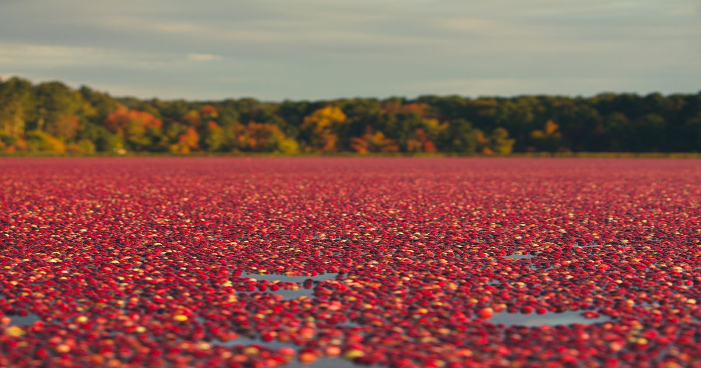

Как геномика помогает клюкве выжить в меняющемся климате
Изменение климата ставит под угрозу урожайность клюквы в основных регионах её выращивания в США. Учёные из Института Солка используют геномное секвенирование и предварительную селекцию, чтобы перенести устойчивость к температурному стрессу от диких родственников на культурную клюкву.
Клюква под ударом климатических изменений
Висконсин производит около 60 процентов всей американской клюквы, но за последние годы болота региона подвергались воздействию аномальной жары, засухи, холодных сносов и града. По данным оценщиков земель, урожайность падала два года подряд, и хотя недавняя статистика показывает небольшое восстановление благодаря позднему убору, тревога среди фермеров не утихает. Потеря влажных угодий под застройку, особенно в Массачусетсе, усугубляет проблему: традиционные ареалы сокращаются, а климатическая волатильность растёт.
Тодд Майкл, геномист растений из Института Солка и самопровозглашённый фанат клюквы, считает, что слово «под угрозой исчезновения» здесь не совсем точно. Культурная клюква (Vaccinium macrocarpon) разводят около 200 лет, но целенаправленной селекции почти не было: большинство сорт — это чуть одомашненные дикие популяции. Это означает огромный неиспользованный потенциал для улучшения адаптивности, если правильно задействовать генетическое разнообразие диких родственников.

Дикий родственник из Аляски как донор устойчивости
В фокусе исследования оказался малоклюквенник (Vaccinium oxycoccos), растущий на северных широтах, включая Аляску. Учёные полностью расшифровали его геном, чтобы выявить аллели, отвечающие за толерантность к экстремальным температурам. Выбор пал на этот вид неслучайно: его ареал перекрывается с ареалом культурной клюквы в Северной Америке, что делает скрещивание биологически естественным и перспективным для переноса адаптивных черт.
Помимо малоклюквенника, в поле зрения исследователей есть брусника и другие северные представители рода Vaccinium. Однако работа с алясским малоклюквенником уже дала конкретный материал: команда перешла от теоретического поиска генов к экспериментальному получению гибридов и анализу их молекулярной реакции на температурный стресс. Такой подход, названный предварительной селекцией, позволяет отсеять неперспективные направления до затратных полевых испытаний.

Неожиданный ответ гибридов на холод
Параллельно с генетической работой решается вопрос сохранения самих болот — уникальной агроэкосистемы, без которой клюквоводство невозможно. В Массачусетсе действуют программы стимулирования восстановления заболоченных угодий вместо их застройки под загородные дома. Конфликт интересов очевиден: новые владельцы усадеб не всегда готовы терпеть ранние утренние работы на болотах, но сохранение этой инфраструктуры критично для будущего отрасли.
Майкл подчёркивает: клюква — это не только гастрономический символ Дня благодарения, но и модель для изучения адаптации растений к влажным экосистемам в условиях климатического хаоса. Успех с клюквой может задать методологический прецедент для других культур, чьи дикие родственники скрывают гены устойчивости к новым реалиям.
Как внедрять геномные подходы в разведение клюквы
Прежде чем начинать работу с геномными данными, стоит обсудить с фито-генетистом или селекционером конкретные климатические вызовы вашего региона: частоту засух, холодных сносов или изменений водного режима. Специалист поможет оценить, какие дикие родственники — например, алясская клюква (Vaccinium oxycoccos) — несут полезные аллели для ваших условий, и какие этапы секвенирования генома уже выполнены. Подготовка включает сбор информации о существующих сортовых испытаниях, доступность болотных угодий и готовность к долгосрочному селекционному циклу, так как перенос признаков из диких форм в культурные требует нескольких поколений скрещиваний и отбора.
Геномная предселекция не подойдет хозяйствам, у которых нет доступа к лабораторной инфраструктуре или возможности вести многолетние полевые опыты. Результат зависит от генетической совместимости родительских форм, стабильности выражения целевых признаков в меняющейся среде и сохранности естественных болот как места обитания диких популяций. Важно также учитывать, что изменение климата может сместить зоны пригодности быстрее, чем успевает завершиться селекционный процесс, поэтому параллельно необходимы меры по защите водных ресурсов и восстановлению болотных ландшафтов.
Коротко: Геномная предварительная селекция позволяет быстро находить и переносить гены устойчивости к температурному стрессу от диких родственников на культурную клюкву. Первый успешный гибрид с алясским малоклюквенником показал усиленный фотосинтез и белковый синтез при охлаждении, что открывает путь к созданию климатоустойчивых сортов без потери ягодных качеств.
Как вы считаете, стоит ли агрономии больше инвестировать в работу с дикими генофондами культурных растений как страховку от климатических рисков?